Data wrangling and visualization in the tidyverse
Joel Östblom
Lesson preamble
Learning Objectives
- Understand the split-apply-combine concept for data analysis.
- Use
summarize,group_by, andtallyto split a data frame into groups of observations, apply a summary statistics for each group, and then combine the results.- Produce scatter plots, line plots, and histograms using ggplot.
- Set universal plot settings.
- Understand and apply faceting in ggplot.
Lesson outline
- Split-apply-combine techniques in
dplyr(20 min)- Using
tallyto summarize categorical data (10 min)- Plotting with
ggplot2(15 min)- Building plots iteratively (15 min)
- Split-apply-combine… plot! (20 min)
- Faceting (10 min)
Setting up
Start by loading the required packages. Both ggplot2 and dplyr are included in the tidyverse package collection.
## ── Attaching packages ────────────────────────────────── tidyverse 1.2.1 ──## ✔ ggplot2 3.2.1 ✔ purrr 0.3.2
## ✔ tibble 2.1.3 ✔ dplyr 0.8.3
## ✔ tidyr 0.8.3 ✔ stringr 1.4.0
## ✔ readr 1.3.1 ✔ forcats 0.4.0## ── Conflicts ───────────────────────────────────── tidyverse_conflicts() ──
## ✖ dplyr::filter() masks stats::filter()
## ✖ dplyr::lag() masks stats::lag()Load the data we saved in the previous lesson.
# Download if needed
# download.file("https://ndownloader.figshare.com/files/2292169", "data/portal_data.csv")
surveys <- read_csv('portal_data.csv')## Parsed with column specification:
## cols(
## record_id = col_double(),
## month = col_double(),
## day = col_double(),
## year = col_double(),
## plot_id = col_double(),
## species_id = col_character(),
## sex = col_character(),
## hindfoot_length = col_double(),
## weight = col_double(),
## genus = col_character(),
## species = col_character(),
## taxa = col_character(),
## plot_type = col_character()
## )## # A tibble: 34,786 x 13
## record_id month day year plot_id species_id sex hindfoot_length
## <dbl> <dbl> <dbl> <dbl> <dbl> <chr> <chr> <dbl>
## 1 1 7 16 1977 2 NL M 32
## 2 72 8 19 1977 2 NL M 31
## 3 224 9 13 1977 2 NL <NA> NA
## 4 266 10 16 1977 2 NL <NA> NA
## 5 349 11 12 1977 2 NL <NA> NA
## 6 363 11 12 1977 2 NL <NA> NA
## 7 435 12 10 1977 2 NL <NA> NA
## 8 506 1 8 1978 2 NL <NA> NA
## 9 588 2 18 1978 2 NL M NA
## 10 661 3 11 1978 2 NL <NA> NA
## # … with 34,776 more rows, and 5 more variables: weight <dbl>,
## # genus <chr>, species <chr>, taxa <chr>, plot_type <chr>Split-apply-combine technique in dplyr
Many data analysis tasks can be approached using the split-apply-combine paradigm: split the data into groups, apply some analysis to each group, and then combine the results.
dplyr facilitates this workflow through the use of group_by() to split data and summarize(), which collapses each group into a single-row summary of that group. The arguments to group_by() are the column names that contain the categorical variables for which you want to calculate the summary statistics. Let’s view the mean weight by sex.
## # A tibble: 3 x 2
## sex mean_weight
## <chr> <dbl>
## 1 F NA
## 2 M NA
## 3 <NA> NAThe mean weights become NA since there are individual observations that are NA. Let’s remove those observations.
## # A tibble: 3 x 2
## sex mean_weight
## <chr> <dbl>
## 1 F 42.2
## 2 M 43.0
## 3 <NA> 64.7There is one row here that is neither male nor female, these are observations where the animal escaped before the sex could not be determined. Let’s remove those as well.
surveys %>%
filter(!is.na(weight) & !is.na(sex)) %>%
group_by(sex) %>%
summarize(mean_weight = mean(weight))## # A tibble: 2 x 2
## sex mean_weight
## <chr> <dbl>
## 1 F 42.2
## 2 M 43.0You can also group by multiple columns:
surveys %>%
filter(!is.na(weight) & !is.na(sex)) %>%
group_by(genus, sex) %>%
summarize(mean_weight = mean(weight))## # A tibble: 20 x 3
## # Groups: genus [10]
## genus sex mean_weight
## <chr> <chr> <dbl>
## 1 Baiomys F 9.16
## 2 Baiomys M 7.36
## 3 Chaetodipus F 23.8
## 4 Chaetodipus M 24.7
## 5 Dipodomys F 55.2
## 6 Dipodomys M 56.2
## 7 Neotoma F 154.
## 8 Neotoma M 166.
## 9 Onychomys F 26.8
## 10 Onychomys M 26.2
## 11 Perognathus F 8.57
## 12 Perognathus M 8.20
## 13 Peromyscus F 22.5
## 14 Peromyscus M 20.6
## 15 Reithrodontomys F 11.2
## 16 Reithrodontomys M 10.2
## 17 Sigmodon F 71.7
## 18 Sigmodon M 61.3
## 19 Spermophilus F 57
## 20 Spermophilus M 130Since we will use the same filtered and grouped data frame in multiple code chunks below, we could assign this subset of the data to a new variable and use this variable in the subsequent code chunks instead of typing out the functions each time.
If you want to display more data, you can use the print() function at the end of your chain with the argument n specifying the number of rows to display.
filtered_surveys %>%
summarize(mean_weight = mean(weight)) %>%
print(n = 15) # Will change the knitted output, not the notebook## # A tibble: 20 x 3
## # Groups: genus [10]
## genus sex mean_weight
## <chr> <chr> <dbl>
## 1 Baiomys F 9.16
## 2 Baiomys M 7.36
## 3 Chaetodipus F 23.8
## 4 Chaetodipus M 24.7
## 5 Dipodomys F 55.2
## 6 Dipodomys M 56.2
## 7 Neotoma F 154.
## 8 Neotoma M 166.
## 9 Onychomys F 26.8
## 10 Onychomys M 26.2
## 11 Perognathus F 8.57
## 12 Perognathus M 8.20
## 13 Peromyscus F 22.5
## 14 Peromyscus M 20.6
## 15 Reithrodontomys F 11.2
## # … with 5 more rowsOnce the data are grouped, you can also summarize multiple variables at the same time. For instance, we could add a column indicating the minimum weight for each species for each sex:
## # A tibble: 20 x 4
## # Groups: genus [10]
## genus sex mean_weight min_weight
## <chr> <chr> <dbl> <dbl>
## 1 Baiomys F 9.16 6
## 2 Baiomys M 7.36 6
## 3 Chaetodipus F 23.8 5
## 4 Chaetodipus M 24.7 4
## 5 Dipodomys F 55.2 10
## 6 Dipodomys M 56.2 12
## 7 Neotoma F 154. 32
## 8 Neotoma M 166. 30
## 9 Onychomys F 26.8 5
## 10 Onychomys M 26.2 9
## 11 Perognathus F 8.57 4
## 12 Perognathus M 8.20 4
## 13 Peromyscus F 22.5 8
## 14 Peromyscus M 20.6 7
## 15 Reithrodontomys F 11.2 4
## 16 Reithrodontomys M 10.2 4
## 17 Sigmodon F 71.7 15
## 18 Sigmodon M 61.3 16
## 19 Spermophilus F 57 57
## 20 Spermophilus M 130 130Challenge
Use
group_by()andsummarize()to find the mean, min, and max hindfoot length for each species.What was the heaviest animal measured in each year? Return the columns
year,genus,species, andweight.
Using tally to summarize categorical data
When working with data, it is also common to want to know the number of observations found for each factor or combination of factors. For this, dplyr provides tally(). For example, if we want to group by taxa and find the number of observations for each taxa, we would do:
## # A tibble: 4 x 2
## taxa n
## <chr> <int>
## 1 Bird 450
## 2 Rabbit 75
## 3 Reptile 14
## 4 Rodent 34247We can also use tally() when grouping on multiple variables:
## # A tibble: 6 x 3
## # Groups: taxa [4]
## taxa sex n
## <chr> <chr> <int>
## 1 Bird <NA> 450
## 2 Rabbit <NA> 75
## 3 Reptile <NA> 14
## 4 Rodent F 15690
## 5 Rodent M 17348
## 6 Rodent <NA> 1209Here, tally() is the action applied to the groups created by group_by() and counts the total number of records for each category.
If there are many groups, tally() is not that useful on its own. For example, when we want to view the five most abundant species among the observations:
## # A tibble: 40 x 2
## species n
## <chr> <int>
## 1 albigula 1252
## 2 audubonii 75
## 3 baileyi 2891
## 4 bilineata 303
## 5 brunneicapillus 50
## 6 chlorurus 39
## 7 clarki 1
## 8 eremicus 1299
## 9 flavus 1597
## 10 fulvescens 75
## # … with 30 more rowsSince there are 40 rows in this output, we would like to order the table to display the most abundant species first. In dplyr, we say that we want to arrange() the data.
## # A tibble: 40 x 2
## species n
## <chr> <int>
## 1 clarki 1
## 2 scutalatus 1
## 3 tereticaudus 1
## 4 tigris 1
## 5 uniparens 1
## 6 viridis 1
## 7 leucophrys 2
## 8 savannarum 2
## 9 fuscus 5
## 10 undulatus 5
## # … with 30 more rowsStill not that useful. Since we are interested in the most abundant species, we want to display those with the highest count first, in other words, we want to arrange the column n in descending order:
## # A tibble: 5 x 2
## species n
## <chr> <int>
## 1 merriami 10596
## 2 penicillatus 3123
## 3 ordii 3027
## 4 baileyi 2891
## 5 megalotis 2609If we want to include more attributes about these species, we can include these in the call to group_by():
## # A tibble: 5 x 4
## # Groups: species, taxa [5]
## species taxa genus n
## <chr> <chr> <chr> <int>
## 1 merriami Rodent Dipodomys 10596
## 2 penicillatus Rodent Chaetodipus 3123
## 3 ordii Rodent Dipodomys 3027
## 4 baileyi Rodent Chaetodipus 2891
## 5 megalotis Rodent Reithrodontomys 2609Be careful not to include anything that would split the group into subgroups, such as sex, year etc.
Challenge
How many individuals were caught in each
plot_typesurveyed?You saw above how to count the number of individuals of each
sexusing a combination ofgroup_by()andtally(). How could you get the same result usinggroup_by()andsummarize()? Hint: see?n.
Plotting with ggplot2
ggplot2 is a plotting package that makes it simple to create complex plots from data frames. The name ggplot2 comes from its inspiration, the book “A grammar of graphics”, and the main goal is to allow coders to express their desired outcome on a high level instead of telling the computer every detail about what will happen. For example, you would say “color my data by species” instead of “go through this data frame and plot any observations of species1 in blue, any observations of species2 in red, etc”. Thanks to this functional way of interfaces with data, only minimal changes are required if the underlying data change or to change the type of plot. This helps in thinking about the data and creating publication quality plots with minimal amounts of adjustments and tweaking.
ggplot graphics are built step by step by adding new elements, or layers. Adding layers in this fashion allows for extensive flexibility and customization of plots. To build a ggplot, we need to:
- Use the
ggplot()function and bind the plot to a specific data frame using thedataargument

Remember, if the arguments are provided in the right order then the names of the arguments can be omitted.

- Define aesthetics (
aes), by selecting the variables to be plotted and the variables to define the presentation such as plotting size, shape color, etc.
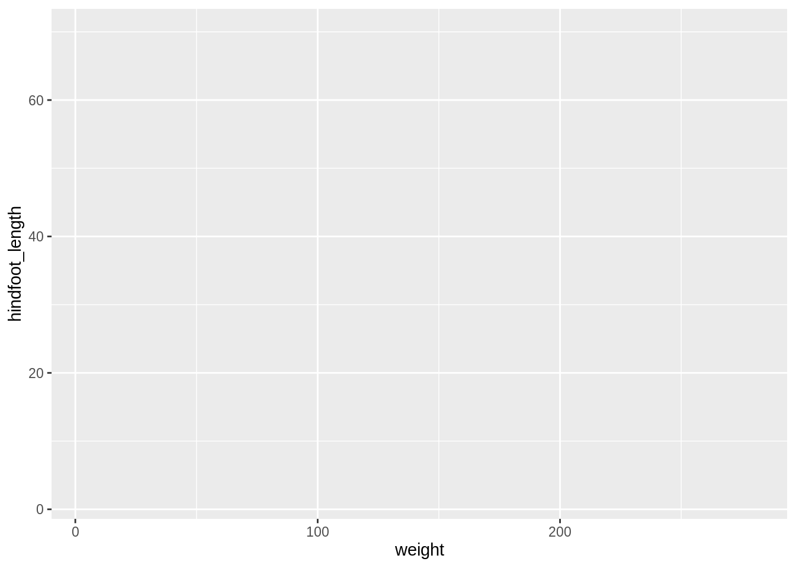
- Add
geoms– geometrical objects as a graphical representation of the data in the plot (points, lines, bars).ggplot2offers many different geoms; we will use a few common ones today, including:geom_point()for scatter plots, dot plots, etc.geom_line()for trend lines, time-series, etc.geom_histogram()for histograms
To add a geom to the plot use + operator. Because we have two continuous variables, let’s use geom_point() first:
# If this takes way too long on your machine, create a subset from a random
# sample of a suitable size and continue working with this instead of `survey`.
#survey_subset <- sample_n(surveys, size = 5000)
ggplot(surveys, aes(x = weight, y = hindfoot_length)) +
geom_point()## Warning: Removed 4048 rows containing missing values (geom_point).
The + in the ggplot2 package is particularly useful because it allows you to modify existing ggplot objects. This means you can easily set up plot “templates” and conveniently explore different types of plots, so the above plot can also be generated with code like this:
# Assign plot to a variable
surveys_plot <- ggplot(surveys, aes(x = weight, y = hindfoot_length))
# Draw the plot
surveys_plot + geom_point()## Warning: Removed 4048 rows containing missing values (geom_point).
Notes:
- Anything you put in the
ggplot()function can be seen by any geom layers that you add (i.e., these are universal plot settings). This includes the x and y axis you set up inaes(). - You can also specify aesthetics for a given geom independently of the aesthetics defined globally in the
ggplot()function. - The
+sign used to add layers must be placed at the end of each line containing a layer. If, instead, the+sign is added in the line before the other layer,ggplot2will not add the new layer and R will return an error message.
Building plots iteratively
Building plots with ggplot is typically an iterative process. We start by defining the dataset we’ll use, lay the axes, and choose a geom:
## Warning: Removed 4048 rows containing missing values (geom_point).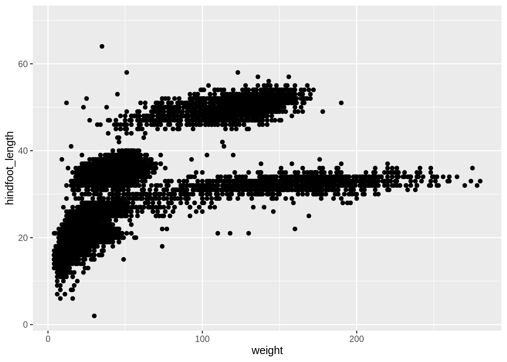
Then, we start modifying this plot to extract more information from it. For instance, we can add transparency (alpha) to reduce overplotting:
## Warning: Removed 4048 rows containing missing values (geom_point).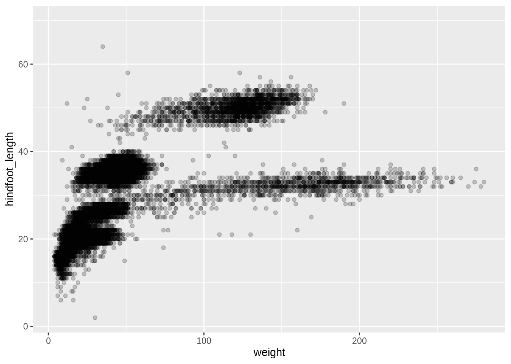
Based on the hindfoot length and the weights, there appears to be 4-5 clusters in this data. Potentially, one of the categorical variables we have in the data could explain this pattern. Coloring the data points according to a categorical variable is an easy way to find out if there seems to be correlation. Let’s try this with plot_type.
## Warning: Removed 4048 rows containing missing values (geom_point).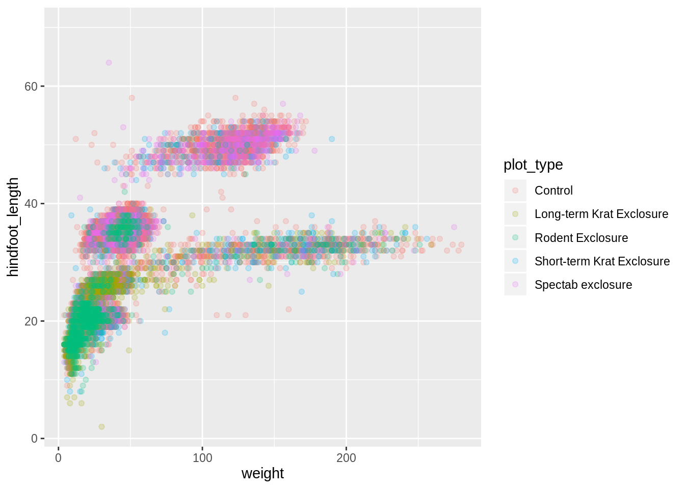
It seems like the type of plot the animal was captured on correlates well with some of these clusters, but there are still many that are quite mixed. Let’s try to do better! This time, the information about the data can provide some clues to which variable to look at. The plot above suggests that there might be 4-5 clusters, so a variable with 4-5 values is a good guess for what could explain the observed pattern in the scatter plot.
## # A tibble: 1 x 13
## record_id month day year plot_id species_id sex hindfoot_length
## <int> <int> <int> <int> <int> <int> <int> <int>
## 1 34786 12 31 26 24 48 3 57
## # … with 5 more variables: weight <int>, genus <int>, species <int>,
## # taxa <int>, plot_type <int>Remember that there are still NA values here, that’s why there appears to be three sexes although there is only male and female. There are four taxa so that could be a good candidate, let’s see which those are.
## # A tibble: 4 x 1
## taxa
## <chr>
## 1 Rodent
## 2 Rabbit
## 3 Bird
## 4 ReptileIt seems reasonable that these taxa contain animals different enough to have diverse weights and length of their feet. Lets use this categorical variable to color the scatter plot.
## Warning: Removed 4048 rows containing missing values (geom_point).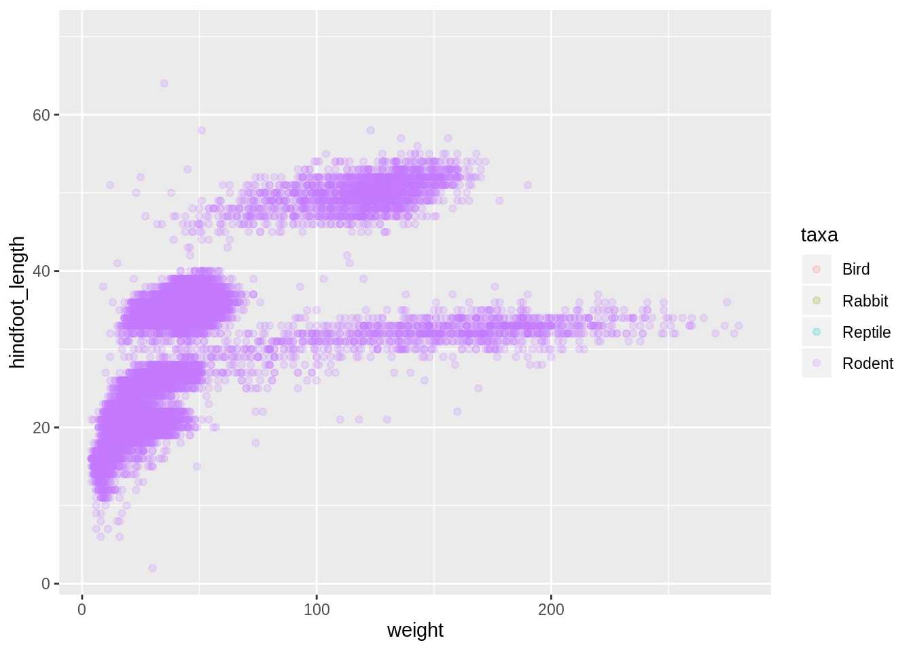
Only rodents? That was unexpected… Let’s check what’s going on.
## # A tibble: 4 x 2
## taxa n
## <chr> <int>
## 1 Bird 450
## 2 Rabbit 75
## 3 Reptile 14
## 4 Rodent 34247There is definitely mostly rodents in our data set…
surveys %>%
filter(!is.na(hindfoot_length)) %>% # control by removing `!`
group_by(taxa) %>%
tally()## # A tibble: 1 x 2
## taxa n
## <chr> <int>
## 1 Rodent 31438…and it turns out that only rodents, have had their hindfeet measured!
Let’s remove all animals that did not have their hindfeet measured, including those rodents that did not. Animals without their weight measured will also be removed.
surveys_hf_wt <- surveys %>%
filter(!is.na(hindfoot_length) & !is.na(weight))
surveys_hf_wt %>%
summarize_all(n_distinct)## # A tibble: 1 x 13
## record_id month day year plot_id species_id sex hindfoot_length
## <int> <int> <int> <int> <int> <int> <int> <int>
## 1 30738 12 31 26 24 24 3 55
## # … with 5 more variables: weight <int>, genus <int>, species <int>,
## # taxa <int>, plot_type <int>Maybe the genus can explain what we are seeing.
ggplot(surveys_hf_wt, aes(x = weight, y = hindfoot_length, color = genus)) +
geom_point(alpha = 0.2)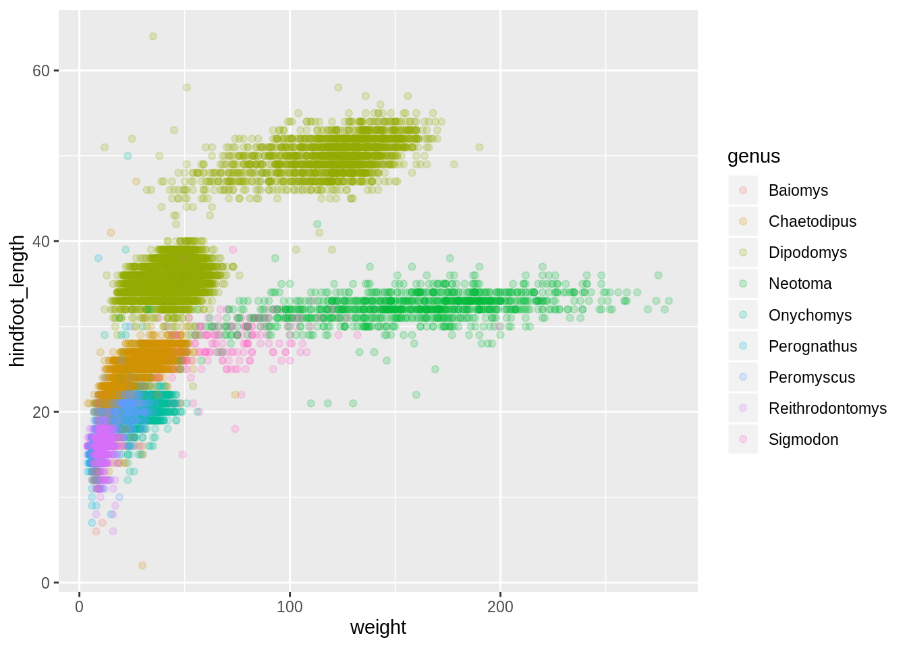
Now this looks good! There is a clear separation between different genus, but also significant spread within genus, for example in the weight of the green Neotoma observations. There are also two clearly separate clusters that are both colored in olive green (Dipodomys). Maybe separating the observations into different species would be better?
ggplot(surveys_hf_wt, aes(x = weight, y = hindfoot_length, color = species)) +
geom_point(alpha = 0.2)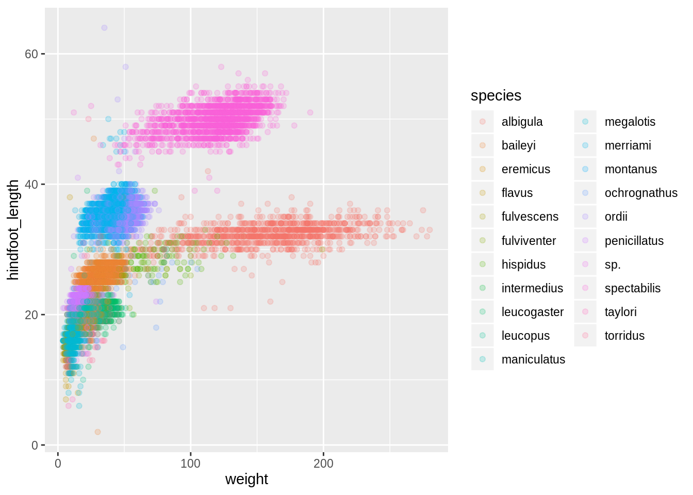
Great! Together with the genus plot, this definitely seem to explain most of the variance we see in the hindfoot length and weight measurements. It is still a bit messy as it appears like we have around 5 clusters, but there are 21 species in the legend.
surveys %>%
filter(!is.na(hindfoot_length) & !is.na(weight)) %>%
group_by(species) %>%
tally() %>%
arrange(desc(n))## # A tibble: 21 x 2
## species n
## <chr> <int>
## 1 merriami 9739
## 2 penicillatus 2978
## 3 baileyi 2808
## 4 ordii 2793
## 5 megalotis 2429
## 6 torridus 2085
## 7 spectabilis 2026
## 8 flavus 1471
## 9 eremicus 1200
## 10 albigula 1046
## # … with 11 more rowsThere is a big drop from 838 to 159, let’s include only those with more than 800 observations.
surveys_abun_species <- surveys %>%
filter(!is.na(hindfoot_length) & !is.na(weight)) %>%
group_by(species) %>%
mutate(n = n()) %>% # add count value to each row
filter(n > 800) %>%
select(-n)
surveys_abun_species## # A tibble: 30,320 x 13
## # Groups: species [12]
## record_id month day year plot_id species_id sex hindfoot_length
## <dbl> <dbl> <dbl> <dbl> <dbl> <chr> <chr> <dbl>
## 1 845 5 6 1978 2 NL M 32
## 2 1164 8 5 1978 2 NL M 34
## 3 1261 9 4 1978 2 NL M 32
## 4 1756 4 29 1979 2 NL M 33
## 5 1818 5 30 1979 2 NL M 32
## 6 1882 7 4 1979 2 NL M 32
## 7 2133 10 25 1979 2 NL F 33
## 8 2184 11 17 1979 2 NL F 30
## 9 2406 1 16 1980 2 NL F 33
## 10 3000 5 18 1980 2 NL F 31
## # … with 30,310 more rows, and 5 more variables: weight <dbl>,
## # genus <chr>, species <chr>, taxa <chr>, plot_type <chr>Still has almost 25k observations, so only 10k was removed.
ggplot(surveys_abun_species, aes(x = weight, y = hindfoot_length, color = species)) +
geom_point(alpha = 0.2)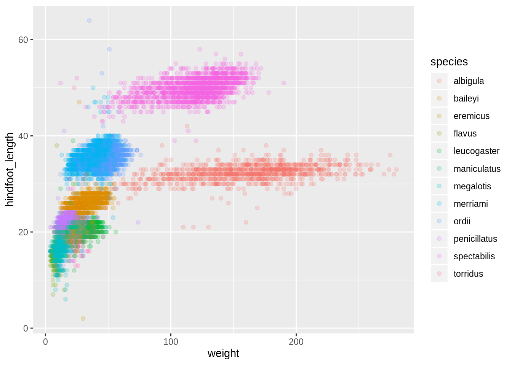
Challenge
Create a scatter plot of hindfoot_length over species with the weight showing in different colors. Is there any problem with this plot? Hint: think about how many observations there are
Split-apply-combine… plot!
In this section, we will learn how to work with **dplyr** and **ggplot** together. Aided by the pipes (%>%), we can create a powerful data exploration workflow using these two packages.
Let’s calculate number of counts per year for each species. First we need to group the data and count records within each group:
surveys_abun_species %>%
group_by(year, genus) %>%
tally() %>%
arrange(desc(n)) # Adding arrange just to compare with histogram## # A tibble: 178 x 3
## # Groups: year [26]
## year genus n
## <dbl> <chr> <int>
## 1 2002 Chaetodipus 1243
## 2 1983 Dipodomys 953
## 3 1985 Dipodomys 951
## 4 2000 Chaetodipus 913
## 5 1982 Dipodomys 896
## 6 1997 Dipodomys 830
## 7 2001 Chaetodipus 781
## 8 1981 Dipodomys 733
## 9 1987 Dipodomys 688
## 10 1980 Dipodomys 667
## # … with 168 more rowsWe could assign this table to a variable, and then pass that variable to ggplot().
yearly_counts <- surveys_abun_species %>%
group_by(year, species) %>%
tally()
ggplot(yearly_counts, aes(x = n)) +
geom_histogram()## `stat_bin()` using `bins = 30`. Pick better value with `binwidth`.
Creating an intermediate variable would be preferable for time consuming calculations, because you would not want to do that operation every time you change the plot aesthetics.
If it is not a time consuming calculation or you would like the flexibility of changing the data summary and the plotting options in the same code chunk, you can pipe the output of your split-apply-combine operation to the plotting command:
surveys_abun_species %>%
group_by(year, species) %>%
tally() %>%
ggplot(aes(x = n)) +
geom_histogram()## `stat_bin()` using `bins = 30`. Pick better value with `binwidth`.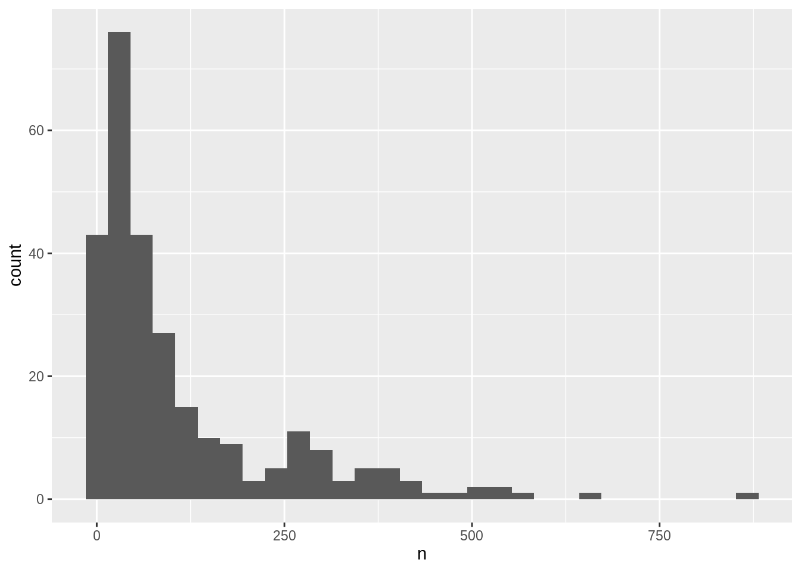
We can perform a quick check that the plot corresponds to the table by coloring the histogram by species:
surveys_abun_species %>%
group_by(year, species) %>%
tally() %>%
ggplot(aes(x = n, fill = species)) + # `fill` is specific for histograms
geom_histogram()## `stat_bin()` using `bins = 30`. Pick better value with `binwidth`.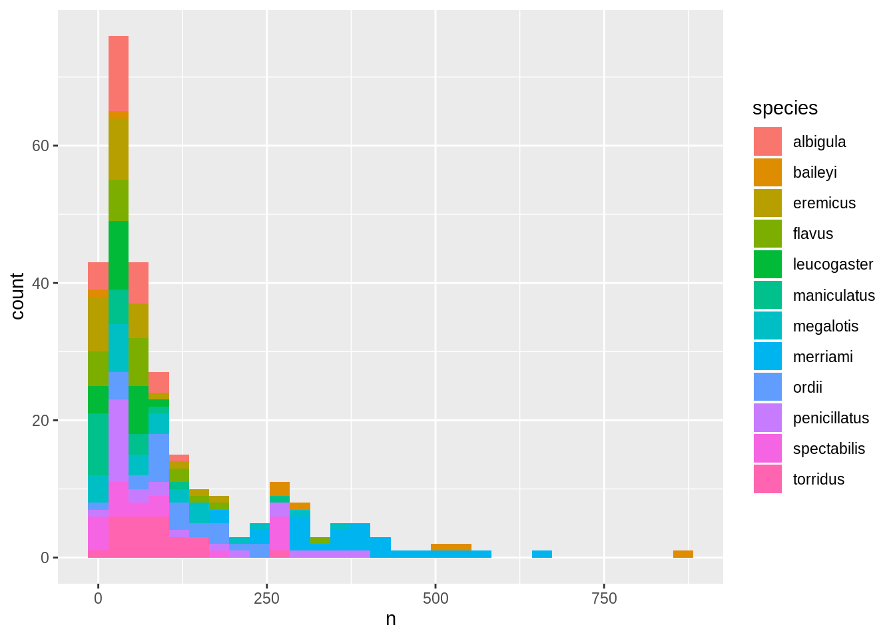
Let’s explore how the number of each genus varies over time. Longitudinal data can be visualized as a line plot with years on the x axis and counts on the y axis:
surveys_abun_species %>%
group_by(year, species) %>%
tally() %>%
ggplot(aes(x = year, y = n)) +
geom_line()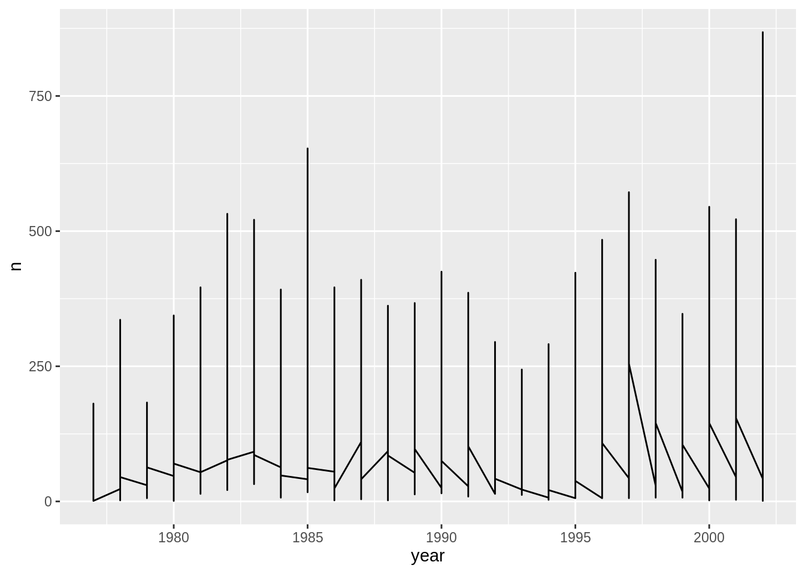
Unfortunately, this does not work because we plotted data for all the species together. We need to tell ggplot to draw a line for each species by modifying the aesthetic function to include group = species:
surveys_abun_species %>%
group_by(year, species) %>%
tally() %>%
ggplot(aes(x = year, y = n, group = species)) +
geom_line()
We will be able to distinguish species in the plot if we add colors (using color also automatically groups the data):
surveys_abun_species %>%
group_by(year, species) %>%
tally() %>%
ggplot(aes(x = year, y = n, color = species)) + # `color` groups automatically
geom_line() # try adding `size = 2`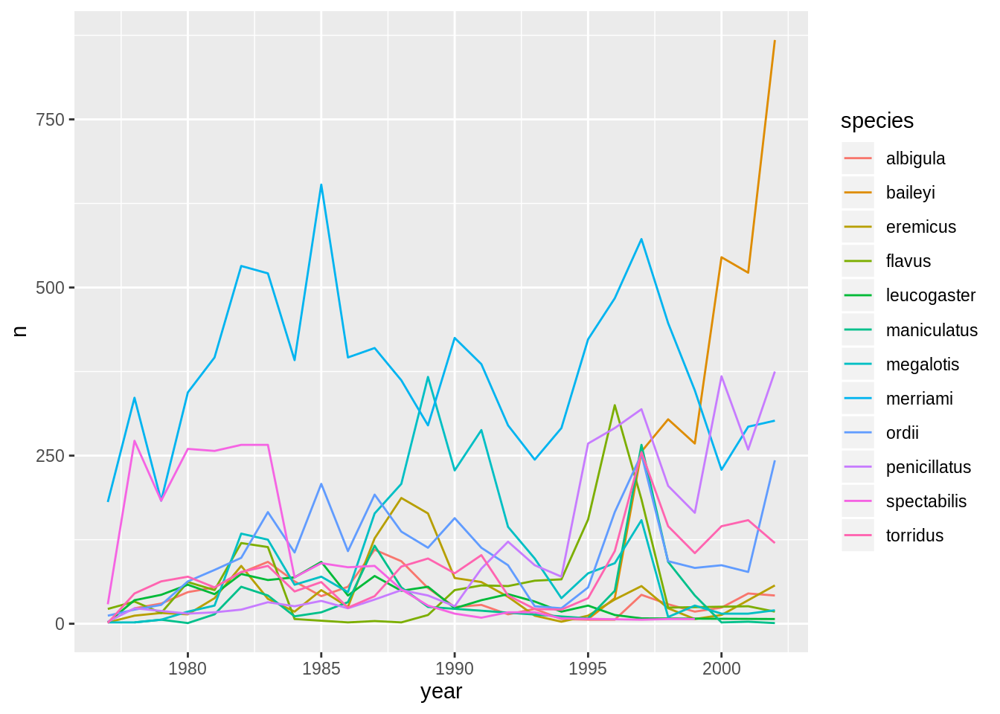
Faceting
ggplot has a special technique called faceting that allows the user to split one plot into multiple subplots based on a variable included in the dataset. We will use it to make a time series plot for each species:
surveys_abun_species %>%
group_by(year, species) %>%
tally() %>%
ggplot(aes(x = year, y = n)) + #
geom_line() +
facet_wrap(~ species)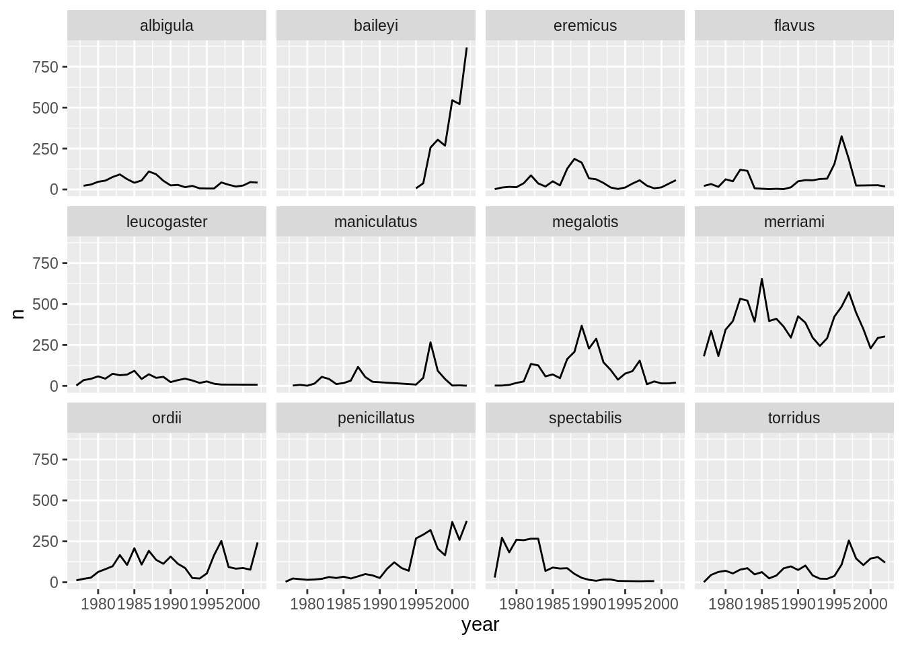
Now we would like to split the line in each plot by the sex of each individual measured. To do that we need to make counts in the data frame grouped by year, species, and sex:
## # A tibble: 575 x 4
## # Groups: year, species [275]
## year species sex n
## <dbl> <chr> <chr> <int>
## 1 1977 eremicus M 2
## 2 1977 flavus F 14
## 3 1977 flavus M 8
## 4 1977 leucogaster F 1
## 5 1977 leucogaster <NA> 1
## 6 1977 megalotis F 1
## 7 1977 megalotis M 1
## 8 1977 merriami F 75
## 9 1977 merriami M 106
## 10 1977 ordii F 10
## # … with 565 more rowsWe can make the faceted plot by splitting further by sex using color (within a single plot):
surveys_abun_species %>%
group_by(year, species, sex) %>%
tally() %>%
ggplot(aes(x = year, y = n, color = sex)) +
geom_line() +
facet_wrap(~ species)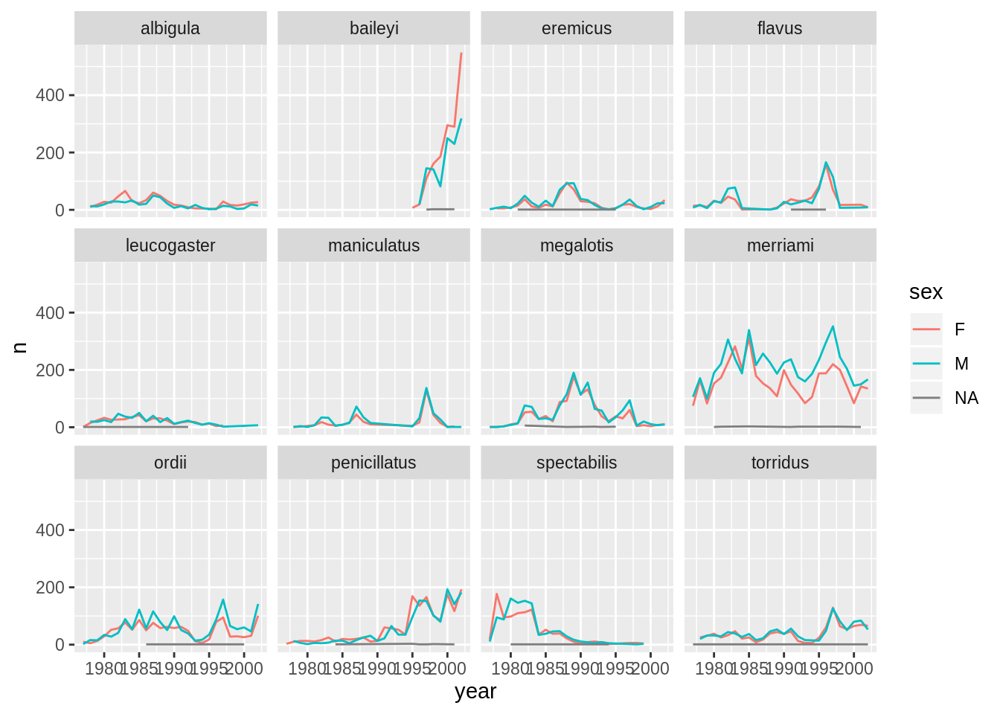
There are several observations where no sex was recorded. In this case, we are not really interested in the observations of unknown sex, so we can filter out those values.
surveys_abun_species %>%
filter(!is.na(sex)) %>%
group_by(year, species, sex) %>%
tally() %>%
ggplot(aes(x = year, y = n, color = sex)) +
geom_line() +
facet_wrap(~ species)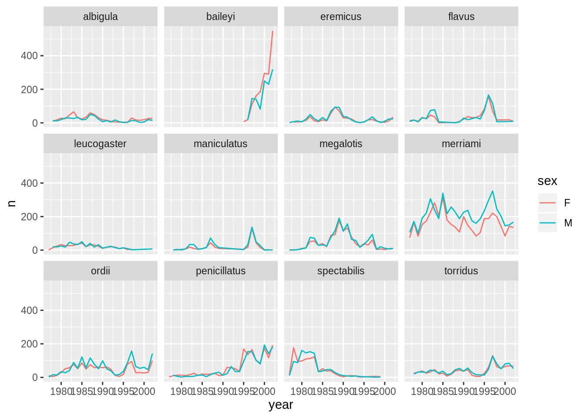
It is possible to specify exactly which colors to use, to avoid those that are hard to distinguish. We can also change the thickness of the lines, and adjust the x labels so that they don’t overlap.
color_names <- c('black', 'orange')
surveys_abun_species %>%
filter(!is.na(sex)) %>%
group_by(year, species, sex) %>%
tally() %>%
ggplot(aes(x = year, y = n, color = sex)) +
geom_line(size = 1) +
scale_color_manual(values = color_names) +
facet_wrap(~ species) +
theme_bw() +
theme(text = element_text(size=12),
axis.text.x = element_text(angle=30, hjust=1))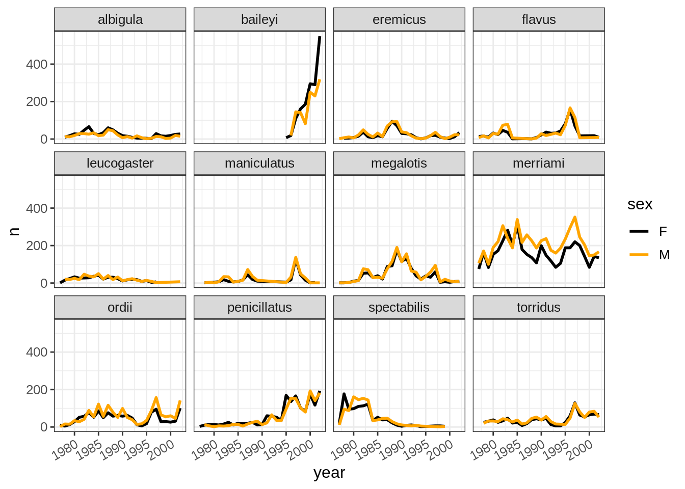
Challenge
Use the filtered data frame for all of these questions.
- Remember the histogram colored according to each species? Starting from that code, how could we separate each species into its own subplot?
- Which year was the average weight of the animals the highest?
- Is the yearly trend the same for all species?
Parts of this lesson material were taken and modified from Data Carpentry under their CC-BY copyright license. See their lesson page for the original source.
This work is licensed under a Creative Commons Attribution 4.0 International License. See the licensing page for more details about copyright information.